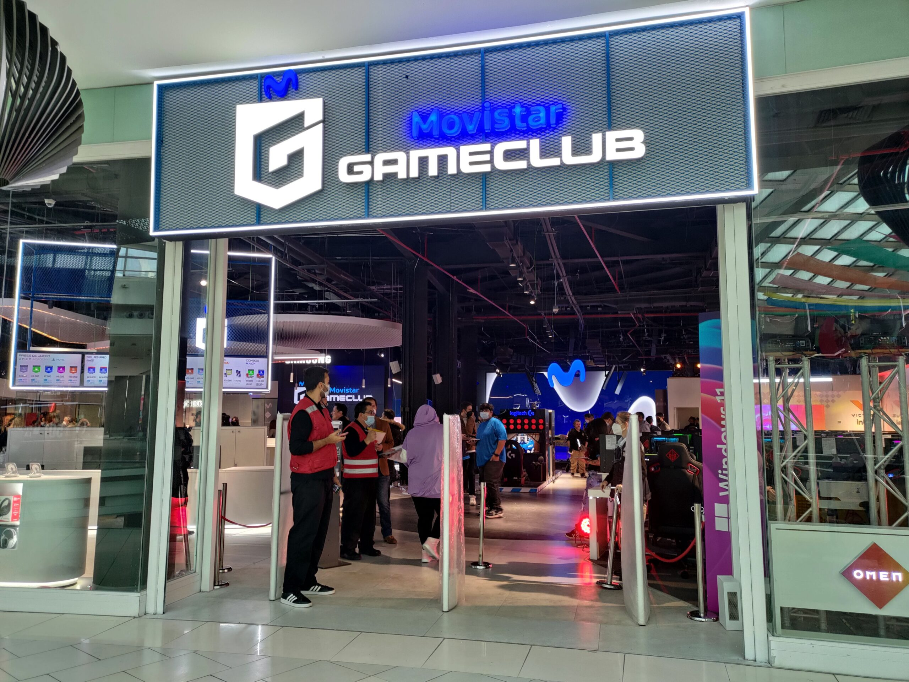

Los 10 videojuegos más populares en Chile durante 2025
Movistar GameClub, el centro especializado en gaming de Movistar Chile, entregó el ranking de los favoritos entre sus más de 1,2 millones de visitantes a lo largo del país.

La industria gamer sigue en ascenso
El gaming continúa consolidándose como una de las principales industrias de entretenimiento digital en Chile y el mundo, impulsado por el avance de una mejor conectividad, comunidades online, propuesta gaming y la variedad y crecimiento en los perfiles de jugadores. En este escenario, Movistar GameClub, el principal espacio gaming del país, dio a conocer el ranking de los videojuegos más populares de sus usuarios, entre los que destacan los shooters (FPS), battle royale, deportivos y de pelea.
Durante 2025 Movistar GameClub registró un crecimiento anual del 22%, con un total de 1.258.000 visitas presenciales, revelando un creciente interés no sólo en videojuegos sino en el ecosistema integral para gamers propuesto por Movistar Chile, que combina espacios físicos, "clubes", ubicados en centros comerciales con servicios digitales, eventos, torneos, equipamiento gamer, servicio técnico especializado Doctor GameClub, entre otros contenidos.
El ranking fue elaborado a partir del análisis de la actividad registrada en los diversos centros presentes a lo largo de Chile durante 2025, considerando variables como cantidad de partidas y horas de cada juego.
Ranking de videojuegos más populares en Movistar GameClub
- Fortnite 24,88% participación
- Valorant 21,95% participación
- Roblox 14,31% participación
- League of Legends 12,18% participación
- Call of Duty Warzone 8,11% participación
- Counter Strike 2 6,85% participación
- Fall Guys 3,53% participación
- Marvel Rivals 2,63% participación
- Rocket League 2,29% participación
- Overwatch 2 1,88% participación
Cómo llegar a Movistar GameClub Mallplaza Norte
📍 Dirección: Mallplaza Norte, Av. Américo Vespucio 1737, Huechuraba, Región Metropolitana.
🕒 Horario: Todos los días de 10:00 a 22:00 hrs.
Movistar GameClub se encuentra en el nivel de tiendas de Mallplaza Norte, cerca del patio de comidas. Puedes llegar en Transantiago (múltiples recorridos con parada frente al mall), en auto por Américo Vespucio con estacionamiento propio del centro comercial, o en bicicleta gracias a los bicicleteros disponibles en el acceso principal.